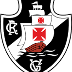

O que o vasco vai fazer nesse periodo de Copa do mundo
O Gigante da Colina está em um período agitado nos bastidores, com o foco voltado para a classificação na Copa Sul-Americana, alterações no plantel e movimentações no mercado. Veja os principais acontecimentos recentes do Cruzmaltino: 🏆 Rumo à Sul-Americana e Luta no Brasileirão Vaga Conquistada na Copa: Com uma vitória por 3 a 1 contra o Barracas Central em São Januário, o Vasco assegurou sua passagem para a fase de mata-mata da Copa Sul-Americana. Sinal de Alerta no Campeonato: A campanha no Brasileirão requer atenção especial. Após um revés de 1 a 0 diante do Atlético-MG em seus domínios, o time se viu na zona de rebaixamento, ocupando a 17ª colocação com 20 pontos. Essa situação intensifica a pressão sobre o técnico, que se defendeu das críticas, declarando que "nunca foi covarde" e justificando seu trabalho. 🔄 Movimentações no Mercado e Reestruturação do Time A diretoria, sob o comando do presidente, almeja usar a pausa no calendário para promover uma reestruturação no elenco: Desligamentos Confirmados: O meia-atacante encerrou seu vínculo de empréstimo e retornou ao clube de origem. O volante também teve sua saída acertada e já recolheu seus pertences do centro de treinamento. O lateral confidenciou a pessoas próximas que sua saída é provável nesta janela de transferências. Chegadas e Extensões: O lateral-esquerdo já teve seu acordo fechado e se apresentará no dia 22 de junho. Ademais, o clube decidiu estender o empréstimo do zagueiro até dezembro. Interesses no Mercado: O clube busca entre três e quatro adições pontuais. Há conversas preliminares com a promessa argentina, zagueiro do Boca Juniors, e o clube está de olho no zagueiro, embora enfrente forte concorrência internacional. 💼 Bastidores e Futuro da Instituição Investidores e a Venda da Parte do Clube: A presidente do Palmeiras confirmou publicamente que seu enteado e a empresa Lamacchia estão em negociações avançadas para a aquisição da parte do Vasco. Leila elogiou a oportunidade de negócio, e a troca de documentos entre o clube e os potenciais investidores progrediu nos últimos dias. Finanças Fortes: Fora das quatro linhas, o Vasco apresentou um balanço financeiro positivo referente ao ano anterior, consolidando-se como o 9º clube em receitas no país e o 3º em superávit, o que garante fôlego financeiro para futuras movimentações. Destaque Internacional: O jovem atacante e o colombiano seguem em alta, participando das preparações de suas respectivas seleções, despertando o interesse do mercado europeu (com o Bournemouth estabelecendo uma multa milionária no contrato do jogador).
Instagram tiktok